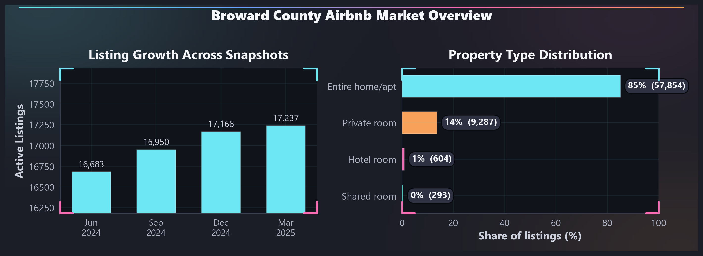
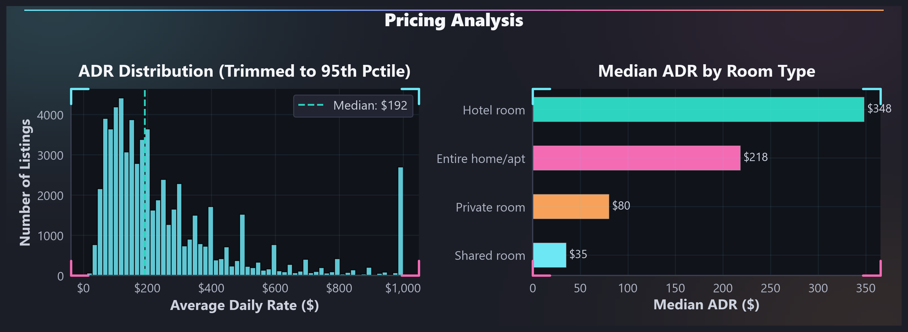
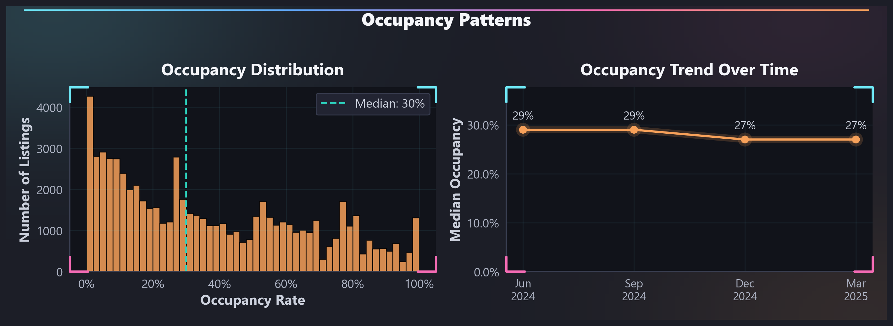
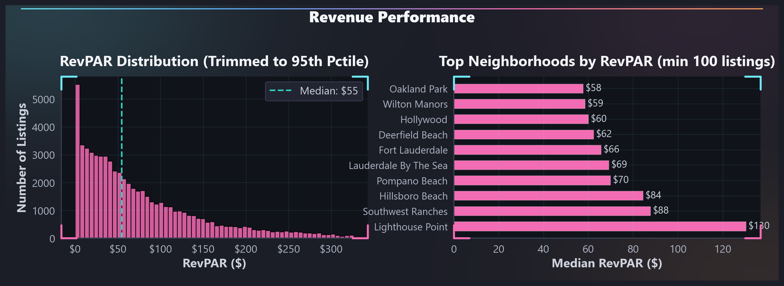
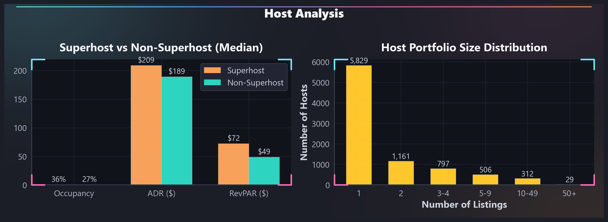

Calendar metrics: 68,036 rows across 4 snapshots
Listing profiles: 68,038 listings
Snapshot range: June 2024 — March 2025Broward County Airbnb: Market Analysis
Python
EDA
Spec Work
The foundation notebook for the Broward series. ADR, occupancy, RevPAR and expected annual revenue derived from calendar availability across about 17,000 active listings per snapshot.
Standalone analysis notebook: reads from exported CSVs in data/processed/, no database required.
This notebook analyzes the Fort Lauderdale / Broward County short-term rental market using data from Inside Airbnb. The dataset covers 4 quarterly snapshots (June 2024 to March 2025) with ~17,000 active listings per snapshot.
Metrics calculated from calendar availability data:
- ADR (Average Daily Rate): mean nightly price on booked days
- Occupancy: booked days / available days, capped at 70%
- RevPAR (Revenue Per Available Room): ADR × occupancy rate
- Expected Revenue: projected annual gross revenue per listing
1. Market Overview
How many listings are active, and what types of properties dominate?

Market grew 3.3% over the observation period (16,683 → 17,237 listings)
Entire homes dominate at 85% of inventory2. Pricing Analysis
What do nightly rates look like across the market?

Median ADR: $192 | Mean ADR: $268
Right-skewed distribution — luxury properties pull the mean above the median3. Occupancy Patterns
How utilized is the Broward County rental market?

23% of listings have <10% occupancy (likely inactive or seasonal)
24% of listings exceed 60% occupancy (high performers)4. Revenue Performance
Which areas generate the most revenue per available night?

Lighthouse Point leads with $130/night RevPAR
Median market RevPAR: $55/night5. Host Analysis
How does Superhost status affect performance, and how concentrated is ownership?

68% of hosts operate a single listing
341 hosts manage 10+ listings (professional operators)6. Neighborhood Comparison
Side-by-side view of the top 8 neighborhoods across multiple dimensions.
Top 8 Neighborhoods — Ranked by RevPAR
==========================================================================================| Listings | Median ADR | Median Occ | Median RevPAR | Median Revenue | % Superhost | |
|---|---|---|---|---|---|---|
| neighbourhood_cleansed | ||||||
| Pompano Beach | 2368 | $188 | 35% | $70 | $25,492 | 45% |
| Fort Lauderdale | 5818 | $220 | 31% | $66 | $23,975 | 48% |
| Deerfield Beach | 920 | $199 | 32% | $62 | $22,769 | 51% |
| Hollywood | 5721 | $204 | 27% | $60 | $21,890 | 28% |
| Wilton Manors | 586 | $208 | 30% | $59 | $21,369 | 62% |
| Oakland Park | 659 | $199 | 33% | $58 | $21,052 | 55% |
| Dania Beach | 878 | $145 | 34% | $51 | $18,589 | 35% |
| Hallandale Beach | 2365 | $229 | 19% | $47 | $16,980 | 19% |
Key Findings
Steady market growth: Broward County added ~550 net new listings over 9 months (+3.3%), suggesting continued STR investment despite regulatory uncertainty.
Pricing is heavily right-skewed: Median ADR of ~$192 vs. mean of ~$370 indicates a long tail of luxury properties pulling averages up. Median is the better benchmark for market entry analysis.
Low median occupancy signals oversupply: At ~30% median occupancy, the majority of listings sit empty most of the year. Only ~20% of listings exceed 60% occupancy.
Superhost status correlates with higher occupancy: Superhosts achieve meaningfully higher occupancy and RevPAR, though the ADR gap is smaller. The value of the badge appears to be in booking volume, not pricing power.
Coastal neighborhoods command premiums: Lighthouse Point and Southwest Ranches lead in RevPAR, while the largest markets (Fort Lauderdale, Hollywood) show moderate per-listing performance due to saturation.
Data: Inside Airbnb | Broward County, FL | June 2024 to March 2025